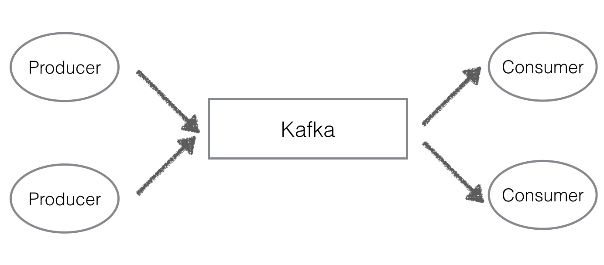
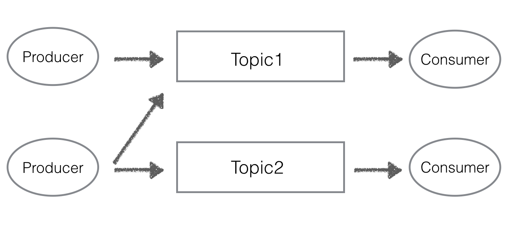
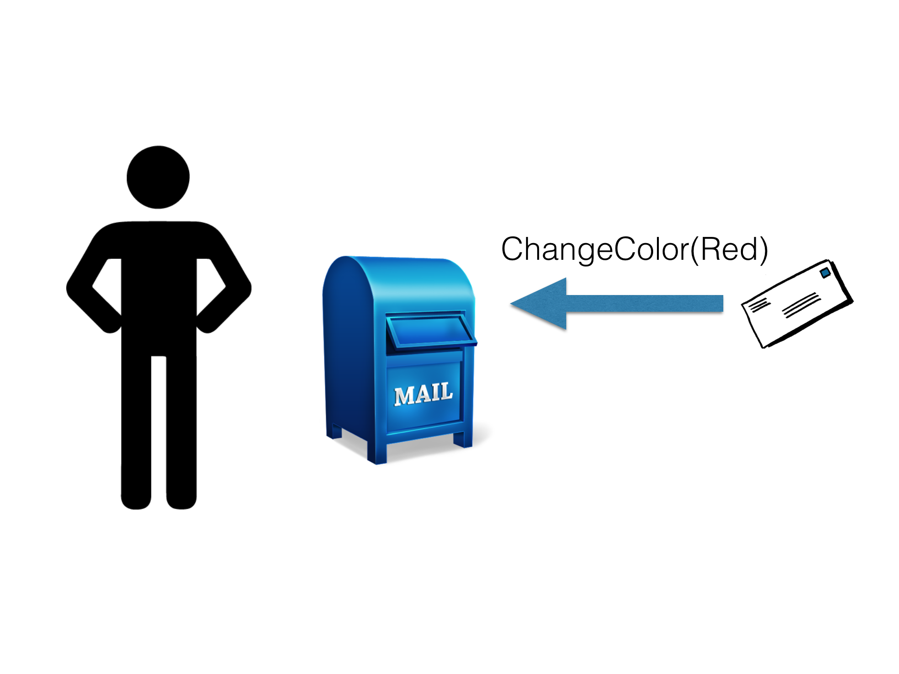
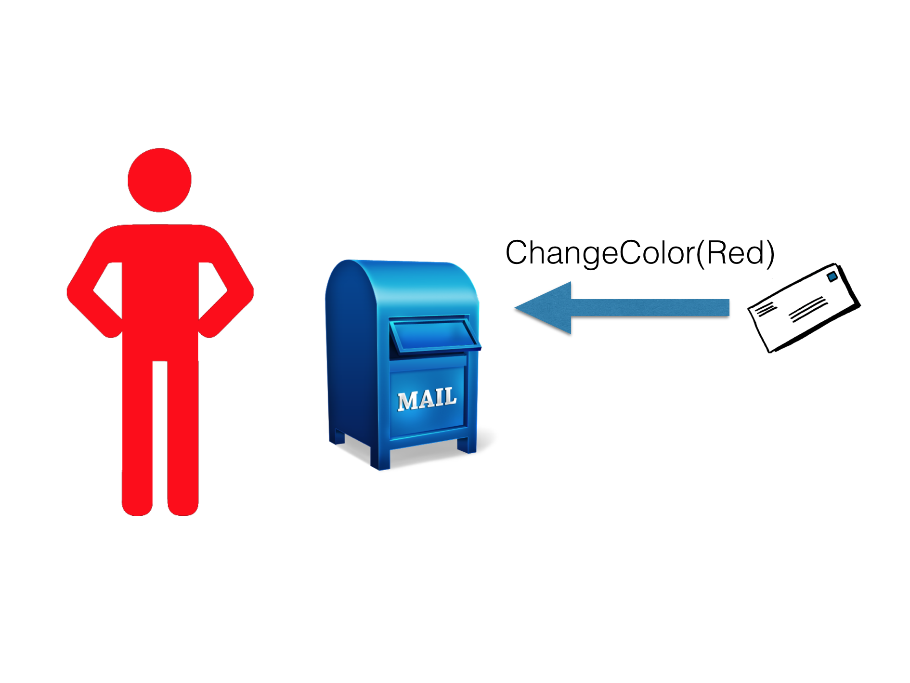
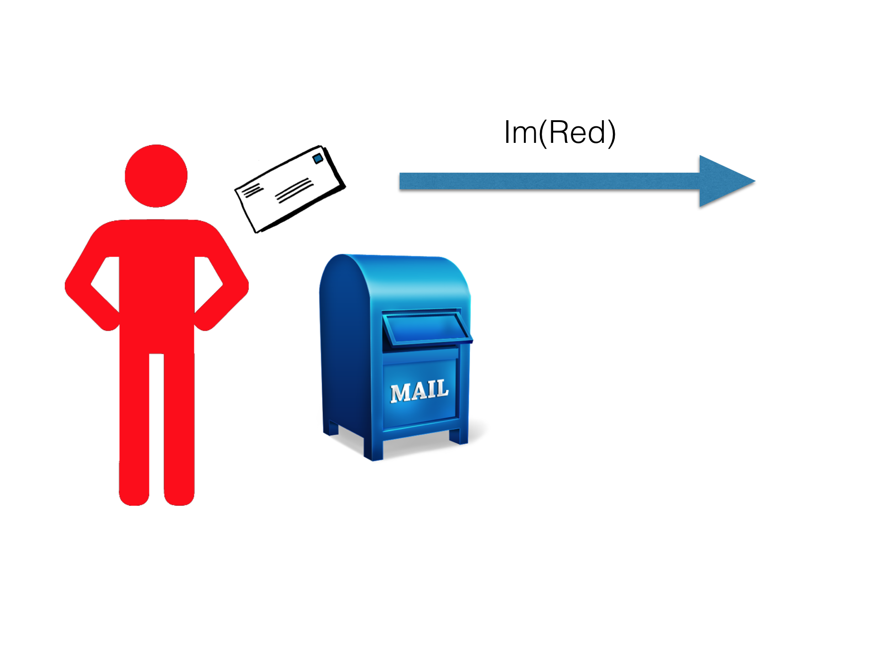
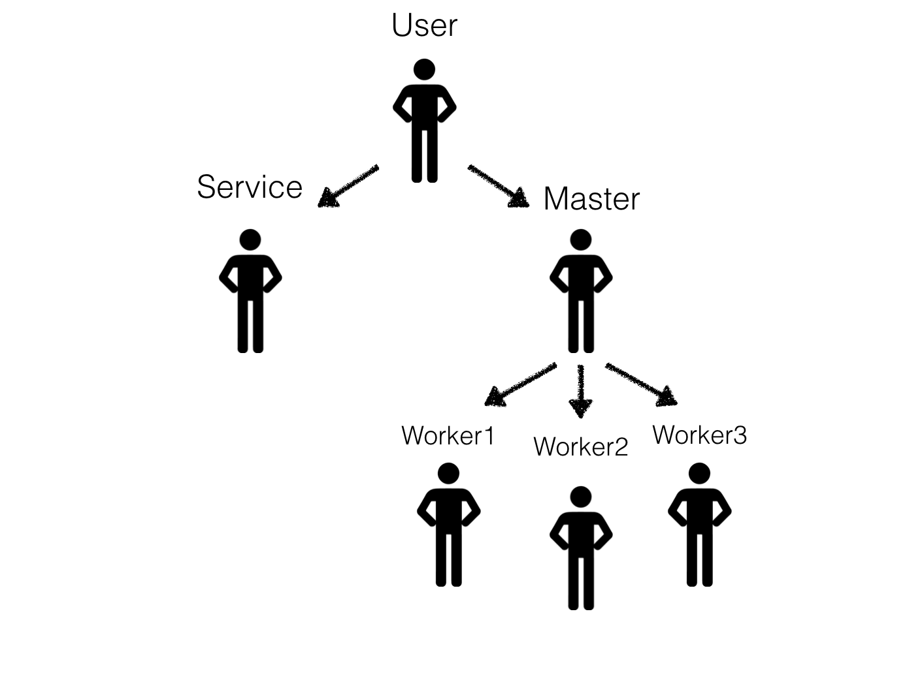
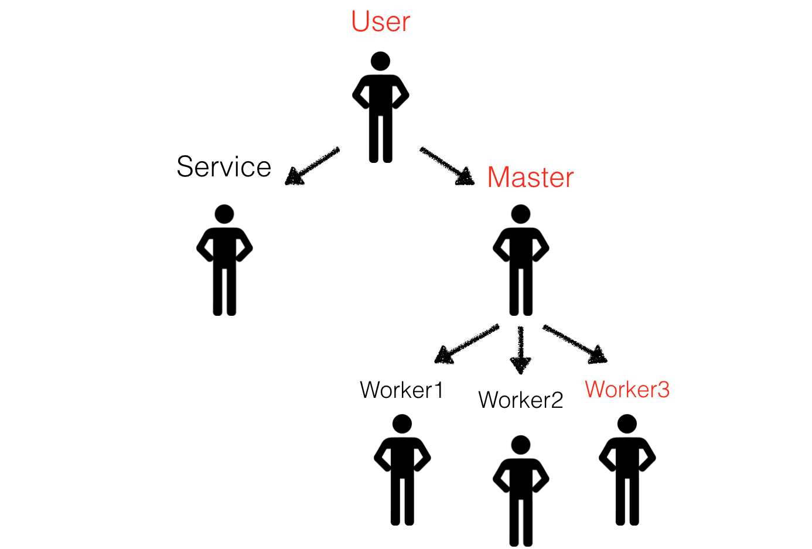
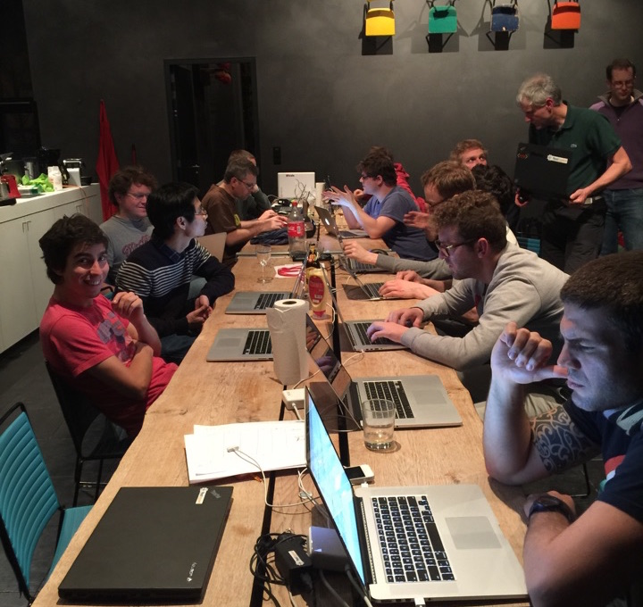

Country-scale Telecom simulator
with Spark + Akka + Kafka
Floran Hachez
Who am I?
-
Computer Engineering
Artificial Intelligence and Applied Mathematics -
Erasmus student
For one semester -
Summer internship
What am I going to talk about ?
-
Principles of Kafka
-
Principles of Akka
-
The Problem
-
The Solution

Apache Kafka is publish-subscribe messaging rethought as a distributed commit log.
Publish-subscribe messaging rethought as a distributed commit log.
Publish-subscribe messaging rethought as a distributed commit log. 
Publish-subscribe messaging rethought as a distributed commit log.

Image from kafka.apache.org
- Partitions are replicated N times
- Up to N-1 failure
Publish-subscribe messaging rethought as a distributed commit log.

Image from kafka.apache.org
Publish-subscribe messaging rethought as a distributed commit log.
- Messages are commit when there are copied on all alive follower for the partition
- Consumers read only committed messages
- A producer can send the message synchronously or asynchronously
Use cases
- Messaging
- Website activity tracking
- Stream processing as link between different processing stage
- Log aggregation
- Event sourcing
Summary
- Fast
- Scalable
- Durable
- Distributed by design

Allows us to build application that are:
- Reactive
- Parallel
- Distributed
- Resilient
Actor
Actor
Actor
Actor
Actor Hierarchy
Actor Hierarchy
- Actor reference
- Actor path: /User/Master/Worker3
Reactive
Parallel
- The actors run concurrently
- An actor runs on one thread at a time
- We don't need mutexes, semaphores and monitors
- Guarantees:
- Messages from one actor to another are order
- At most once delivery
Distributed
- Design for distributed system
- Location transparency
- Communicate with other computers
- Create actors in other JVMs
- Driven by configuration
- Guarantees:
- Messages from one actor to another are order
- At most once delivery
Resilient
If there is a problem, an actor can :
- Resume
- Restart
- Kill itself
- Escalate the problem to the parent
Use cases
- Spark: Master/Worker
- Web server
- Service backend
- Game server
- Simulation
Summary
- Scale up
- Scale out
- Resilient
Missions
| Operational optimization | Campaign managment |
|---|---|
|
Drive field actions Improve network coverage Performance tracking Stock management Managed services Data commercialization |
Improve marketing Strengthen subscriber acquisitions Acquire competitor market Increase cross-sales Reduce churn Target high value subscribers A/B test campaign messages Compute campaign's ROI |
Size
- Active in 35+ countries
- Treating telecom data of 300,000,000 subscribers daily
- 4% of world population
- 10% of Africa's population
Data
| Call Detail Record (CDR) | |
| Date — Time — Duration | |
| Billing — Recharge — Money transfer | |
| Social Network | |
| Antenna's geolocalisation | |
| Network information |
What do we struggle with?
- Benchmarking
- Stress testing for data quantity increase
- Prepare for worst case scenario
- Convince prospect
Solution?
Simulate a real world telecommunication provider
Requirements
- Be as close as possible to reality
social behaviours, mobility paterns, activity distibutions, ... - Be able to simulate the bigest telco providers
China Mobile: 800M subscribers
Telco Simulator
Genesis

What did we build?
Nature
God
God
God creates the world
- the antennas based on the geography
- the subscribers based on
- operators + number of subs
- profiles for each operator (social + mobility)
- geographical distribution of the population
- the social graph based on social profiles
Nature
Nature brings it to life

Synchronisation : Async
- The clock sends the time to everyone
- Every actor advances at his own pace (his message queue)
- Simple
- But we can't make any supposition about time ...
Synchronisation : Sync
- The clock waits for eveybody to finish
before sending the next tick - As slow as the slowest actor
- We can make suppositions about time
Future challenges
- synchronisation
use distributed event driven simulation - Reality how to get closer ?
- mobility
who is where ?